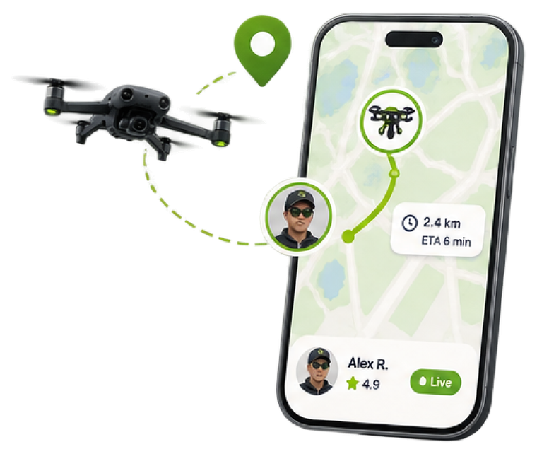

A verified operator
DRON assigns the nearest certified, insured operator. You don't choose or guess.
Track it live
See the operator's name, photo and live position the moment you pay.

A photo or report, every time
Get a photo or a report the moment it's done.